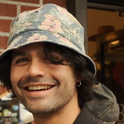

Machine Learning Researcher
Daniel Worrall
Lead, Digital Twins team · Cusp (from 1 Dec 2026) · formerly Google DeepMind
I work on AI for science: building high precision machine learning models that can rival and surpass classical numerical methods, while leveraging the power of data-driven techniques. On 1 December 2026 I join Cusp to lead the Digital Twins team. At Google DeepMind I worked on AI weather prediction, and before that on equivariance, normalizing flows, uncertainty quantification, combinatorial optimization, and medical imaging.

Writing
Blog
Hyper-dual numbers and higher-order derivatives
Extending dual numbers with multiple independent infinitesimals gives a clean, recursive route to higher-order automatic differentiation, connecting to the labeled rooted trees of Faà di Bruno's formula.
On rooted trees and differentiation
The chain rule for higher order derivatives boasts a wealth of beautiful mathematical structure touching the theory of special rooted trees, group theory, combinatorics of integer partitions, order theory, and many others.
Dual numbers
There is a generalisation of the complex numbers where i²=0 instead of i²=−1. Functions extended to this dual number system have the curious property that we can read off their derivatives if we evaluate them at the dual number x + i.
Reversible optimisers
Reversible neural architectures have been a popular research area in the last few years, but reversibility is also built into many modern day neural optimisers, perhaps serendipitously.
On the 'invention' of randomness
Jaynes essentially claims that randomness simply does not exist. It is a human invention. After lecturing a Bayesian statistics course for two years, I felt fairly confident in my understanding — it seems I was wrong.
Updates
Latest News
-
Oct 2026
I have left Google DeepMind and will be joining Cusp as Lead of the Digital Twins team on 1 December 2026.
-
Sep 2025
New preprint: Discovery of Unstable Singularities. Blog → · Quanta →
-
2024
New preprint: Spectral Shaping for Neural PDE Surrogates, with M. Cranmer, JN Kutz, and P. Battaglia.
-
Apr 2023
Neural Simulated Annealing published at AISTATS 2023.
-
Jul 2022
Lecturing at PALMS 2022 Machine Learning Summer School.
-
Apr 2022
Joined the Structured Intelligence Team at DeepMind as a Senior Research Scientist.
-
Mar 2021
Talk at ELLIS Symposium on Geometric Deep Learning for Medical Imaging — Equivariance: Trends and Challenges. Watch →
-
Feb 2021
Talk at IBM Research on Exploiting Symmetries for Deep Learning.
-
Sep 2020
Joined Qualcomm AI Research as a Staff Engineer.
-
Aug 2020
Lectured at the Machine Learning Summer School Indonesia.
Background
Bio
Dec 2026 —
Lead, Digital Twins Team
Cusp
2022 — 2026
Senior Research Scientist
Structured Intelligence Team, Google DeepMind, London
2020 — 2022
Staff Engineer
Machine Learning for Combinatorial Optimization, Qualcomm AI Research, Amsterdam
2018 — 2020
Postdoctoral Researcher
Amsterdam Machine Learning Lab with Max Welling. Lectured Bayesian Statistics for ML. Lab manager for Philips Lab at UvA.
2014 — 2018
PhD in Computer Vision
University College London with Gabriel J. Brostow and Dr. Clare Wilson FRCOphth.
2010 — 2014
MEng Engineering
Sidney Sussex College, University of Cambridge (Scholar).
Mentoring
Previous Masters Students
Alessandra van Ree
Neural PDE Solvers
Eli de Smet
Saddle-Free Newton Descent
Jan Huiskes
Fast Fourier Transform Neural Networks
Rob Hesselink
Contrastive Equivariant Representations
Vivian van Oijen
Esophageal Histopathology
Esophageal Histopathology
Conditional Normalizing Flows
Learning Convolutions
Jonas M J Braun
Non-geometric Equivariance
Equivariance for Tracking
Reversible Networks for Medical Imaging
Semi-supervised Learning